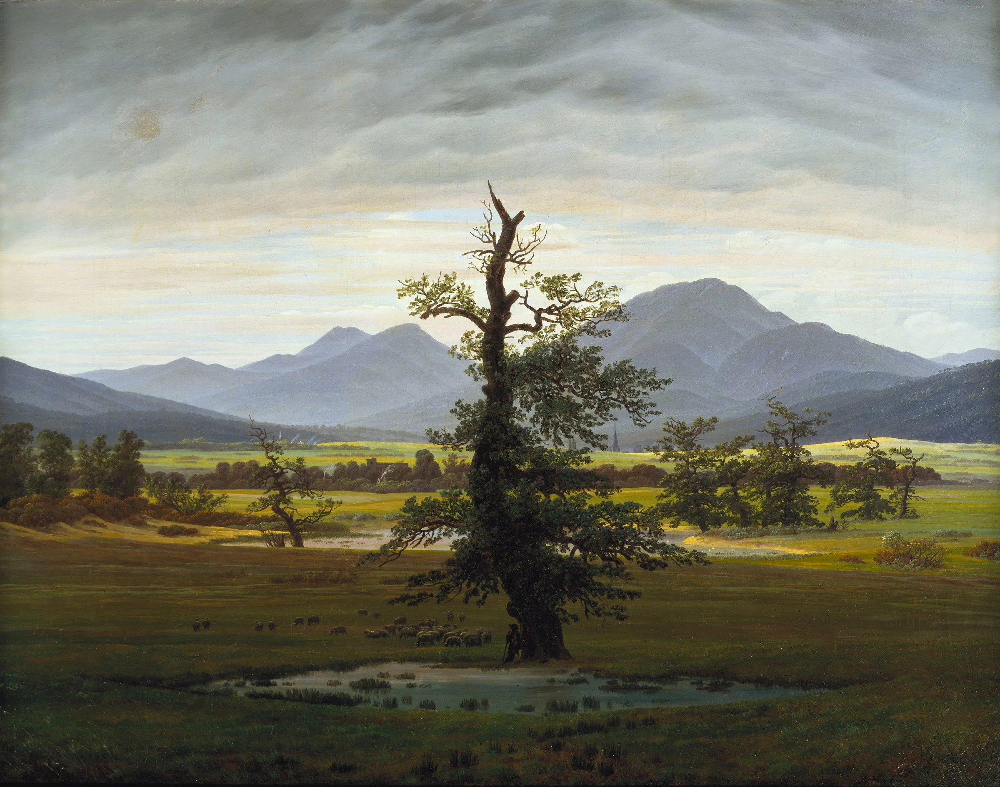
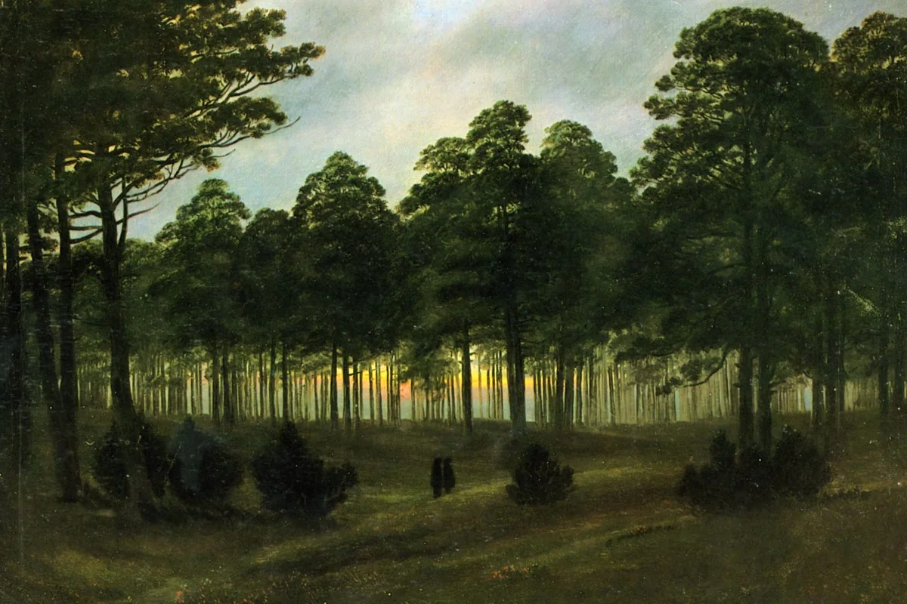
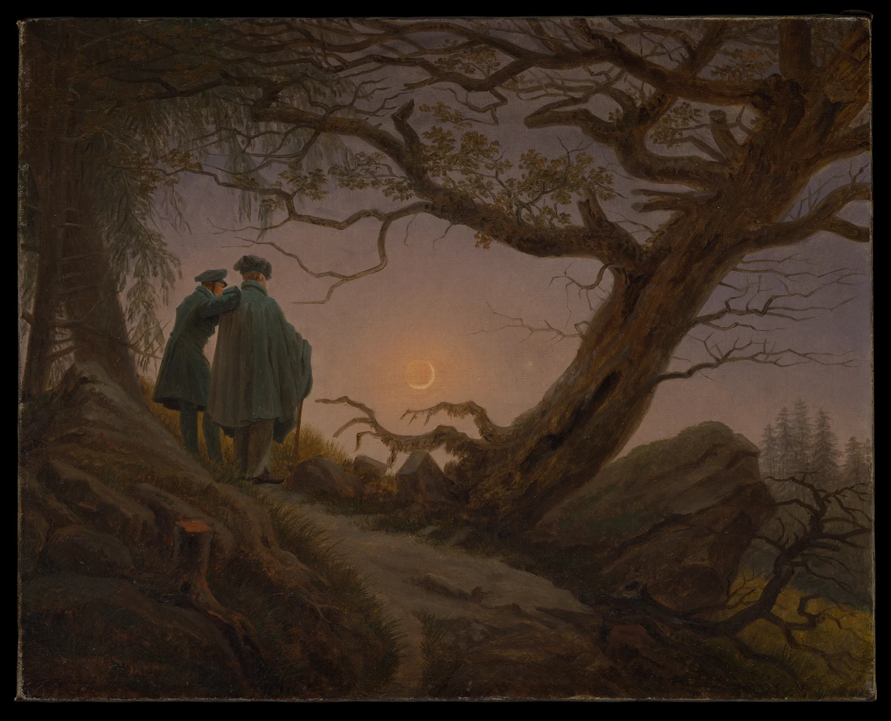
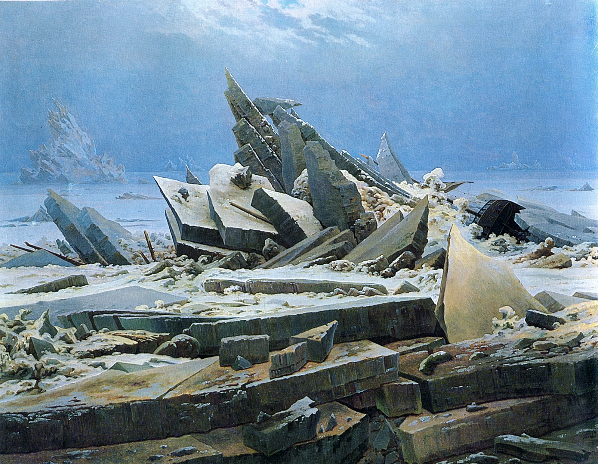

Skip to content
Oswin Cervantes
About
Documentation
Random
Random
My favorite paintings
Caspar David Friedrich
Pause
Previous
Next

The Lonely Tree

Evening

Two Men Contemplating the Moon

The Sea of Ice
Oswin Mix
Open playlist on YouTube
YouTube channel